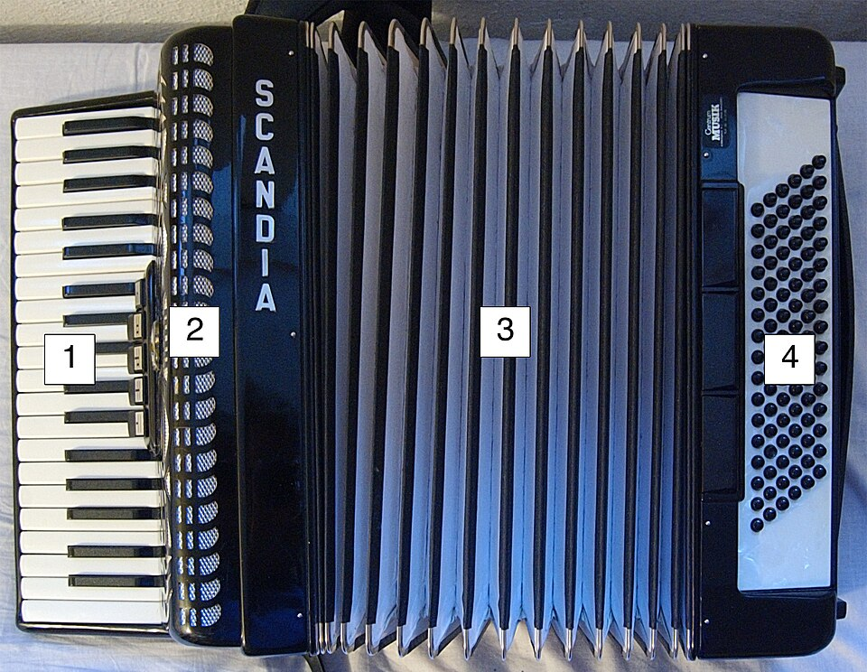

Instrumenti
Harmonika u sevdahu
Kako harmonika proizvodi zvuk, kada je postala dio sevdaha i zašto je važna u pratnji pjevača.
Kako nastaje zvuk
Brojevi na fotografiji označavaju dijelove harmonike.
- Klavirske tipke sviraju melodiju. Na nekim harmonikama su na tom mjestu dugmad.
- Rešetka štiti unutrašnje dijelove i propušta zvuk.
- Mijeh pokreće zrak. Kad svirač pritisne tipku ili dugme, zrak pokrene tanki metalni jezičak. Jezičak zatreperi i nastane ton.
- Bas dugmad pod lijevom rukom služe za duboke tonove i akorde za pratnju.
Svirač može držati pritisnutu tipku i produžiti ton sve dok kroz instrument prolazi zrak. Pokretom mijeha može učiniti ton tišim ili glasnijim.

Harmonika kroz vrijeme
Kada je ušla u sevdah?
Kraj 19. stoljeća
Širenje harmonike u Bosni i Hercegovini obično se povezuje s austrougarskim periodom, nakon 1878. godine. Ipak, ne postoji jedna godina u kojoj je ona odjednom postala instrument sevdaha: etnomuzikolog Zanin Berbić navodi da postoje i tragovi njenog sviranja prije tog perioda.
Prije harmonike važnu ulogu imao je saz, a pjesme su se pjevale i bez instrumentalne pratnje. Novi instrument postepeno je dobio svoje mjesto uz starije načine izvođenja.
Radio i prepoznatljiva pratnja
Nakon osnivanja Radio Sarajeva 1945. godine, glasovi pjevača i sviranje harmonikaša stizali su do sve većeg broja slušalaca. Ismet Alajbegović Šerbo i Jovica Petković među muzičarima su koji su obilježili tu praksu.
Harmonika je pogodna za pratnju jer jedan svirač može svirati melodiju desnom rukom, a basove i akorde lijevom. Mijehom oblikuje jačinu i trajanje tona, pa instrument može pratiti duge pjevačke fraze.
Mjesto u današnjim izvedbama
Danas se čuje i kao samostalna pratnja i kao dio većeg sastava. Njena uloga zavisi od aranžmana: nekad vodi uvod, nekad svira tišu podlogu, a nekad odgovara glasu između stihova.
Više o historiji instrumenta u sevdahu: razgovor s etnomuzikologom Zaninom Berbićem ↗.
Kako harmonika prati pjevača
-
Prije prvog stiha
Harmonika može odsvirati kratki uvod iz melodije pjesme. Tako pjevač čuje odakle će krenuti, a slušaoci mogu prepoznati pjesmu.
-
Dok traje stih
Dok glas nosi melodiju, svirač može svirati tiše akorde. Akord je nekoliko tonova koji zvuče zajedno i daju podlogu glasu.
-
U pauzi između stihova
Kad pjevač uzme dah, svirač ima prostora za kratki odgovor. Može ponoviti kraj otpjevanog stiha ili odsvirati prijelaz u novu strofu.
Vježba slušanja
Poredi početak pjesme Kad ja pođoh na Bentbašu u dvije izvedbe.
Zaim Imamović i Ismet Alajbegović Šerbo
Na snimku s Jugotonove ploče iz 1957. godine pjeva Zaim, a prati ga Šerbo na harmonici. U arhivi je snimak pod oznakom B03, na ploči Bosanske narodne pjesme i plesovi.
Otvori arhivu i pronađi snimak B03Amira Medunjanin
Ista pjesma u studijskoj izvedbi s albuma Damar. Pokušaj prepoznati koje zvukove čuješ u pratnji i koliko dugo uvod traje.
Poslušaj Amirinu izvedbu na YouTubeu
U oba snimka prvo slušaj uvod, zatim prepoznaj mjesto gdje počinje glas. Kad stigneš do prve pauze u pjevanju, obrati pažnju na to šta se u pratnji nastavlja čuti.